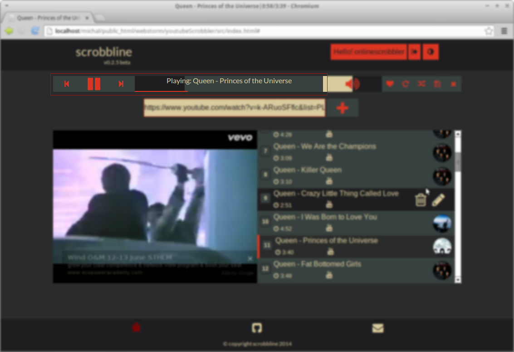
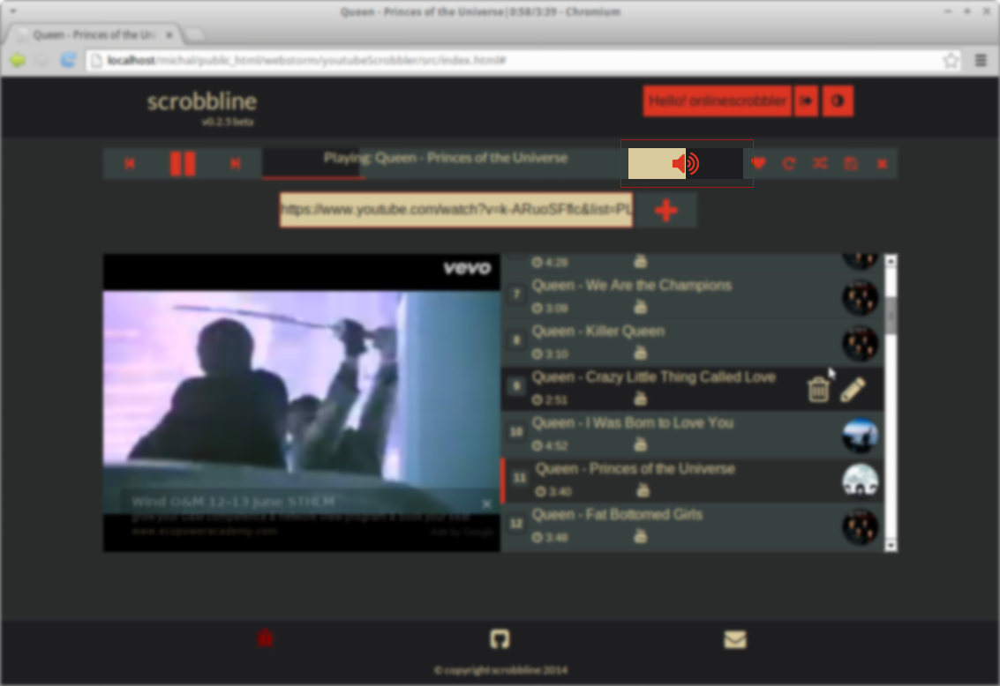
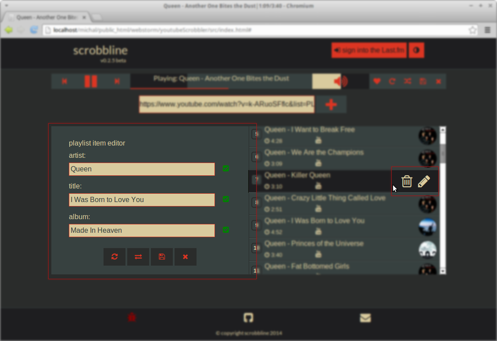

How to start:
As you can read in README file, for now it supports only music from youtube.
Here are few steps that you should do to fully enjoy your music using this app:
- Go to youtube, and search for music you would like to listen to
- open selected clip or playlist and copy link from address bar
-
now you can go to scrobbline and paste your link to input box which you will find at the center of screen (see screenshot below)
- now wait few seconds to load all data from youtube and last.fm
- to start playing music just click on chosen track from loaded playlist
Few additional information:
- music loaded from youtube has to have specific naming format/pattern - it should be artist name and title separated by dash
- scrobbline will load to its playlist only clips that are matching mentioned pattern
- after loading clip details from youtube scrobbline will correct artist name and title using last.fm database
go to menu
How to control music playback:
As you can see on screen below there are few buttons that allows you to control music playback.
It is (from the left):
- play previous track (if currently played is first one it will load last track from the playlist - loop option must be selected otherwise there will be no reaction)
- Play/Pause music
- play next track (if currently played track is last on the playlist it will jump to first item on playlist - loop option must be selected otherwise there will be no reaction
It is also possible to rewind currently played track - by clicking on progress bar with track title (on the right side of playback controls).

go to menu
How to control playlist:
There is a few buttons that allow to control playlist and its behaviour (starting from the left):
- like/love - it gives a possibility to love track on last.fm portal - it is required to be signed into last.fm
- loop - when is selected playlist will be constantly repeated
- shuffle - when pressed tracks in playlist will change order (randomly)
- save - allows to store current playlist - using local storage
- clear - removes all tracks from playlist (it does not clear saved playlist)
You can also edit details of each item, or remove it from the playlist for more details please see How to edit track details.
go to menu
How to change volume:
It is as easy as controlling track playback - volume level will be changed when volume bar will be clicked (left side is 100% right is 0% volume level).

go to menu
How to edit track details:
First step is to move mouse pointer over the track you want to modify details on playlist - you will see two icons (trash and pencil) first one will remove item from playlist, second one will open track details editor.
There are four buttons (see screen below):
- reload - it will get data from last.fm database to validate its correction
- swap - it will swap title and artist name - it is common that these values are in incorrect positions on youtube's track details
- save - stores entered values and refreshes playlist view
- close - will close editor without saving changes
Beside each text input is a small icon which indicating if entered details are correctly recognised on last.fm. It is basing on mbid od received data.

go to menu
How to sign into last.fm portal:
Without signing into last.fm portal you will not be able to scrobble music. Another benefit is that you will be able to love music and see what you already loved on playlist view.
To sign in you have to press button located on page header. You will be moved to last.fm page where you should confirm that you are happy to allow scrobbline.com to scrobble on your profile.
Do not worry it will not do anything else especially without your will. It will never ask you about your password, it is not needed.
go to menu
How to scrobble:
The only thing you have to do to be able to scrobble music is to sign into last.fm portal. It is described here: How to sign into last.fm portal.
While you listening to music scrobbline will also update information about currently played song.
go to menu